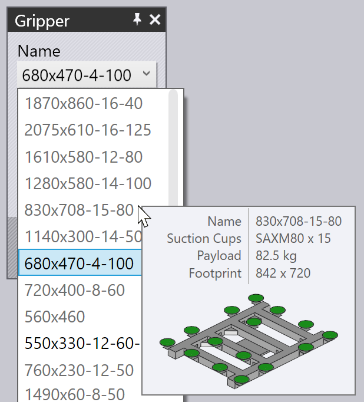

Odbiór z palety
Gdy używany jest chwytak ssawkowy lub magnetyczny, półfabrykaty (części płaskie) są odbierane z palety. Następujące parametry wpływają na ten proces:
-
Położenie palety w komórce maszyny.
-
Położenie i ułożenie stosu detali na palecie.
-
Położenie i ułożenie chwytaka ssącego na detalu.
-
Konfiguracja przyssawki chwytaka (które przyssawki są włączane/wyłączane i jaki rodzaj przyssawek montowany jest w każdym gnieździe).
-
Obszary detalu, które są obrazowane przez kamerę na robocie, oraz wykorzystywane jako punkty odniesienia do kalibracji położenia detalu.
Panele służące do edycji wszystkich tych ustawień są wyświetlane poniżej – wszystkie są połączone linkami nawigacyjnymi przesuwania w górę / w dół prowadzącymi do innych paneli w logicznej sekwencji:

Jak pokazuje powyższy obrazek, dostęp do tych paneli można również łatwo uzyskać, po prostu klikając różne obiekty w symulacji:
-
Aby otworzyć panel Paleta, kliknij paletę.
-
Aby edytować stos detali na palecie (panel Odbiór), kliknij na półfabrykaty leżące na palecie.
-
Aby edytować pozycję chwytaka na półfabrykacie (panel Chwytak), kliknij na chwytak.
-
Aby edytować konfigurację przyssawki chwytaka (panel Ssanie), kliknij jedną z przyssawek.
-
Aby edytować pozycje obrazowania (używane przez system rozpoznawania pozycji precyzyjnych), kliknij kamerę.
Panel palet
Panel Paleta służy do wyboru palety i umieszczenia jej w komórce. Możesz otworzyć ten panel, klikając paletę; Flux ustawi również oś czasu symulacji tak, aby robot był ustawiony w punkcie podnoszenia detalu z palety.

-
Za pomocą Name możesz wybrać inną paletę. Zwykle wymienione są tylko palety, które nadają się do tego półfabrykatu, ale można wyłączyć kontrolę Filtered i następnie zostają wymienione wszystkie dostępne palety.
-
Przesunięcie kursora myszy nad nazwą na liście nazw powoduje wyświetlenie szybkiego podsumowania tej palety, wraz z miniaturą:

-
Użyj danych wejściowych Position, aby ustawić paletę w pozycji Z i X (we współrzędnych komórki), a następnie użyj danych wejściowych Angle, aby obrócić paletę. Podczas przesuwania lub obracania palety detal układana jest na palecie, a chwytak/robot podążają za ruchem.
-
Użyj przycisków Next i Prev, aby przejść do innych palet w komórce; na przykład palet z operacjami odkładania detali.
-
Użyj przycisku Pickup nawigacji, aby edytować pozycję stosu detali na palecie.
-
Użyj przycisku Save Config pod sekcją Advanced, aby zapisać tę konfigurację komórki (w tym wszystkie palety) jako domyślną dla tej maszyny.
Panel odbioru
Panel Odbiór służy do edycji położenia stosu części na palecie. Możesz otworzyć ten panel bezpośrednio, klikając stos półfabrykatów leżących na palecie. (Możesz również uzyskać do niego dostęp za pomocą linku Pickup z panelu Paleta).

-
Użyj danych wejściowych Position, aby ustawić stos na palecie; współrzędne te określają środek detalu w Z i X względem narożnika palety i znajdują się w lokalnej przestrzeni współrzędnych palety.
-
Użyj danych wejściowych Angle, aby obrócić detal na palecie.
-
Użyj przełącznika Flip part, aby odwrócić detal. Należy pamiętać, że zazwyczaj będzie to oznaczać, że konieczna będzie dodatkowa operacja przechwytu przed wykonaniem pierwszego gięcia (zostanie automatycznie dodane przez TecZone Bend).
-
Użyj linku Camera, aby przejść do panelu Kamera, gdzie możesz konfigurować fazę rozpoznawania obrazu odbioru.
-
Link Waypoints wyświetla edytor Punkty orientacyjne, w którym można precyzyjnie dostroić trajektorię robota podczas odbioru.
-
Link RG-Stations wyświetla panel Stacja przechwytowa, w którym można skonfigurować jej pozycję podczas operacji pobierania.
Gdy detal jest przemieszczana na palecie, chwytak pozostaje przyklejony do detalu i robot podąża za ruchami.
Panel chwytaka
Panel Chwytak służy do wyboru innego chwytaka lub do zmiany pozycji i ułożenia, w których chwytak podnosi detal.

-
Za pomocą Name możesz wybrać inny chwytak. Zwykle wyświetlane są tylko chwytaki odpowiednie dla tego detalu (na podstawie rozmiaru chwytaka i ładunku), ale można wyłączyć kontrolę Filtered, a następnie wszystkie chwytaki zostaną wymienione.
-
Przesunięcie kursora myszy nad nazwą na liście chwytaków powoduje wyświetlenie podsumowania tego chwytaka wraz z miniaturą:
 -
Użyj danych wejściowych Position, aby przesunąć środek chwytaka względem środka detalu i użyć danych wejściowych Angle, aby obrócić chwytak względem detalu.
-
Użyj linku Suction, aby przejść do precyzyjnej edycji chwytaka (wyboru różnych przyssawek, włączania/wyłączania przyssawek).
-
Przycisk Set Grip Plane służy do pozycjonowania chwytaka na innej płaszczyźnie. Zwykle do pozycjonowania chwytaka używana jest największa płaszczyzna. Jeśli chcesz to zmienić, kliknij ten przycisk. Następnie kliknij płaszczyznę, w której powinien być umieszczony chwytak:

-
Przycisk Use Jaw Gripper służy do przełączania tej części za pomocą dozownika detalu i chwytaka szczękowego (chwytaka mechanicznego). Wszystkie etapy cyklu gięcia od odbioru do odkładania są przeliczane za pomocą szczęki gripper[1].
Ostrzeżenia dotyczące ssania
Jeśli chwytak zostanie przesunięty w taki sposób, że niektóre przyssawki leżą na arkuszu lub są umieszczone nad otworami w detalu, przyssawki zostają podświetlone, a w
kolumnie nawigatora Odbiór wyświetla się błąd, jak pokazano na poniższym obrazku:

Menu działań

Przycisk Działania służy do wywołania menu, które zawiera kilka przydatnych działań na chwytaku:
-
Auto-place: Shift Próbuje zmienić położenie chwytaka nad detalem, upewniając się, że wszystkie przyssawki znajdują się wewnątrz detalu, a nie nad otworami (jeśli to możliwe).
-
Turn off leaking cups: wyłącza wszystkie przyssawki leżące nad otworami lub znajdujące się poza granicami. part[2].
-
Turn on all cups: Włącza wszystkie wyłączone przyssawki.
-
Save Config: Jeśli skonfigurujesz chwytak, obracając lub usuwając niektóre przyssawki, lub poprzez zmianę długości ramion lub kątów (dla chwytaków MultiGrippers, które mogą zmieniać kształt), możesz zapisać zmienioną konfigurację chwytaka z nową nazwą w celu łatwego ponownego użycia.
-
Export Gripper: Zapisz bieżący chwytak jako plik .fxbgrip, który można zaimportować do innej instalacjiTecZone Bend. Jest to przydatne, jeśli zaimportowano niestandardowy chwytak i trzeba go udostępnić na potrzeby innych instalacji.
Panel Ssanie
Panel Ssanie służy do konfiguracji układu przyssawek chwytaka. Można otworzyć ten panel, klikając bezpośrednio na przyssawce lub wybierając link Przyssawka na panelu chwytaka.

-
Za pomocą Cup # wybierz konkretną przyssawkę w chwytaku lub użyj przycisków Next i Prev, aby przeglądać przyssawki. Wybrana przyssawka jest podświetlona na niebiesko i można ją edytować.
-
Dla każdej przyssawki można ustawić State na Wł., Wył. lub Usunięto. Zapoznaj się z poniższym opisem, aby uzyskać więcej informacji na ten temat.
-
Za pomocą panelu Type możesz zmienić typ przyssawki. Zwykle zmienia się wszystkie przyssawki w chwytaku na nowy typ, ale można również dopasować przyssawki, wyłączając przycisk Change All i następnie wymieniając przyssawki. (Należy pamiętać, że podczas wykonywania tej czynności wybór przyssawek będzie ograniczony, ponieważ wszystkie przyssawki zamontowane na ramie chwytaka muszą mieć tę samą wysokość roboczą). Powyższy rysunek przedstawia dwie przyssawki zastąpione mniejszymi (SAXM50 zamiast domyślnej SAXM80).
-
Użyj przycisku Reset, aby przywrócić chwytak z powrotem do stanu pierwotnego – wszystkie przyssawki są włączane i przywracane do stanu domyślnego, który jest zdefiniowany w chwytaku.
Domyślnym stanem przyssawki jest Wł., co oznacza, że przyssawki są podłączone do instalacji próżniowej i pomagają podczas podnoszenia.
Jeśli przyssawka znajduje się nad otworem w detalu, można zmienić stan na Wył., co oznacza brak próżni. (Zmniejsza to uniesienie chwytaka i zmienia środek podnoszenia, które Flux bierze pod uwagę przy sprawdzaniu wydajności chwytaka). Należy pamiętać, że przyssawka jest nadal zamontowana w ramie i uczestniczy w kontrolach zderzeń. Flux wyświetla wyłączone przyssawki jako makiety, jak widać w przypadku dwóch przyssawek na ilustracji powyżej.
Na koniec można ustawić status przyssawki na Usunięto, co oznacza, że przyssawka została usunięta z ramy w rzeczywistej maszynie. Ta przyssawka nie uczestniczy w podnoszeniu i nie spowoduje zderzenia. Jest to czasami przydatne, jeśli przyssawka opada na uformowany obszar lub powoduje zderzenie z matrycą lub stołem maszyny podczas pracy.
Panel kamery
Proces odbioru wymaga przechwycenia jednego lub więcej obrazów przez kamerę i system przetwarzania obrazu wykorzystuje te obrazy do oszacowania dokładnego położenia detalu na palecie. Kliknięcie w kamerę zamontowaną na robocie lub wybranie przycisku nawigacji Kamera na panelu Odbiór otwiera panel kamery. Flux nastawia również symulację tak, aby robot znajdował się w pozycji wymaganej do przechwycenia obrazu:

-
Użyj listy Index (lub przycisków Next i Prev), aby cyklicznie przeglądać różne precyzyjnie rozpoznawalne obrazy używane w tym detalu. W tym czasie Flux wyświetla pomarańczowy kontur, który pokazuje strefę rozpoznawania obrazu na detalu (patrz ilustracja powyżej).
-
Użyj danych wejściowych*Position*, aby zmienić położenie tej strefy w Z i X w celu lepszego uwzględnienia niektórych interesujących cech, które mogą poprawić dokładność rozpoznawalności (narożniki, małe otwory, nacięcia).
-
Użyj przycisku Add, aby dodać dodatkowy obraz do rozpoznania (do 4) i przycisku Remove, aby usunąć bieżący obraz do rozpoznania. Podczas symulacji pobierania detalu Flux pokazuje, jak robot przechodzi do każdego z tych obszarów rozpoznawania z kamerą skierowaną w dół i zatrzymuje się, aby pobrać obraz.
Jeśli przełącznik Use backlight table jest włączony, to detal jest przenoszony na podświetlany stół przed użyciem kamery do zobrazowania detalu. Zwiększa to kontrast i jest przydatne w przypadku detalu silnie odbijającego światło. TecZone Bend dodaje podświetlany stół i ustawia go automatycznie w pobliżu palety odbiorczej, ale możesz następnie skonfigurować pozycję, klikając na nią: